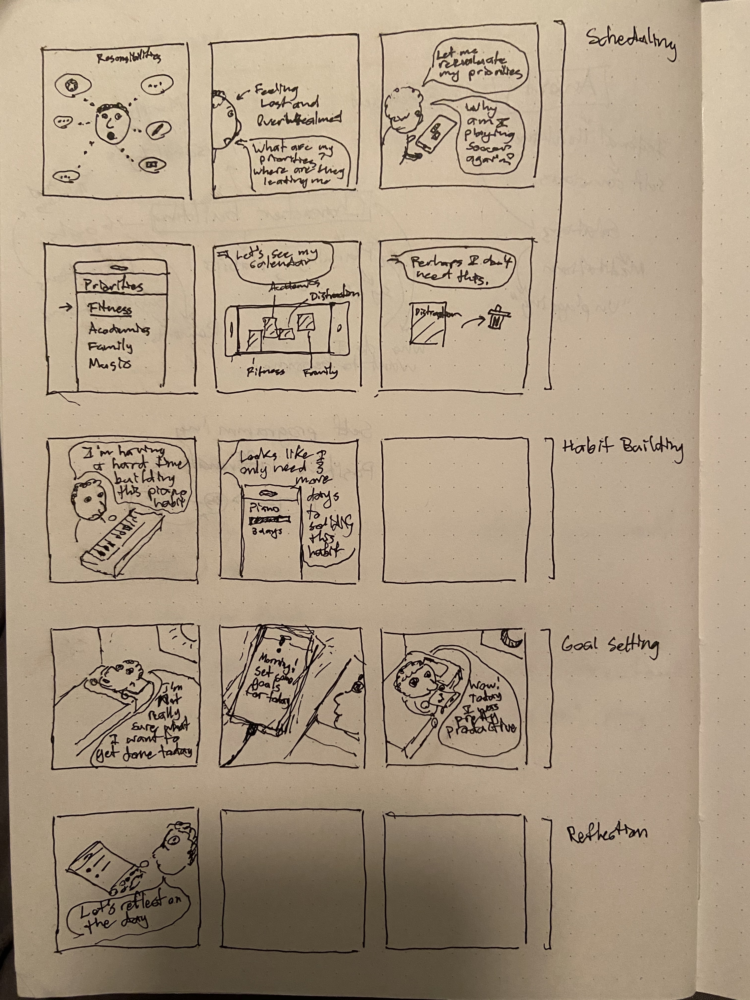

This technique helped me think about the different use cases of my app and how they interact with the user at different stages of their life or during their days. I'm sure that I can apply this awareness of the user's context into the final product.
